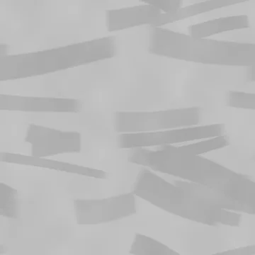
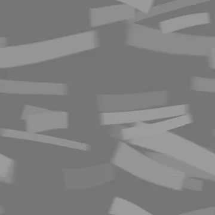
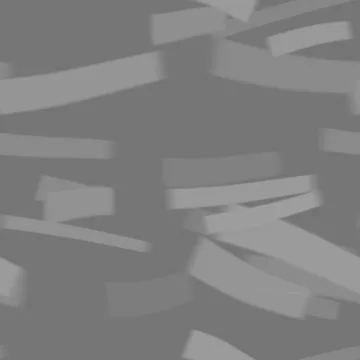
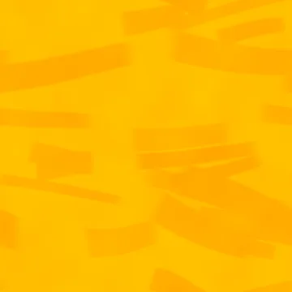
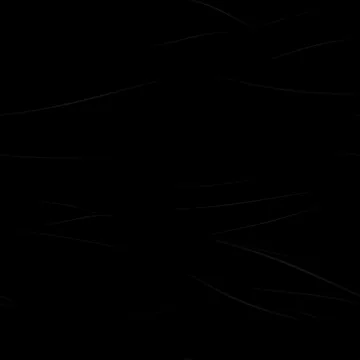

Base color
sRGB · RGB8
4096 × 4096 · 1.66 MiB
SHA-256
5836bacb8d87fc4eb82d1dfd44f8f9565eff7b19e695859ab849afa0c4edc2a4Rebuilt suite / 09
Overlapping broad trowel passes and polished leading lips with restrained fine aggregate.
The specimen and matched surface proof are different presentations. Native texture resolution does not determine render resolution.

Specimen: Blender 4.5.3 LTS · CPU · 768 maximum / 128 minimum samples · adaptive threshold 0.005 · denoising: false · AgX.
Specimen manifest · Matched-proof manifest · Editable specimen scenes · Renderer source · Review and remaining limits
Specimen SHA-256 c995e724e28390fda12132d5b709e670755302d4c9f0768e5d041332a81f09a1
Proof SHA-256 ae6d16ce3f97584a04246fe24dfb6806e6a96144b2428bfaa0ff84f95a4e82d8
Base color uses sRGB; data maps use linear / Non-Color. Displacement in meters = (height − 0.5) × 0.002. Pair macro height with residual normal for geometric displacement, or use the full normal without macro displacement.
Previews below are reduced display copies. Each link opens the unchanged native 4096 × 4096 map.
sRGB · RGB8
4096 × 4096 · 1.66 MiB
5836bacb8d87fc4eb82d1dfd44f8f9565eff7b19e695859ab849afa0c4edc2a4
Linear · Gray8
4096 × 4096 · 0.34 MiB
4d3e880565cc533246c591631f811d240c138b3798cbbc482fcba096d5567db0
Linear · Gray8
4096 × 4096 · 0.02 MiB
334c4a79f661f8f9c215b7fd06284d5fb3fe7fd3822f10dc8842f85f664c9a7fTangent space · RGB8
4096 × 4096 · 4.37 MiB
a14aa6deb5d715d59baae1cda8d78b1b7a278b2f6702ec643282846082f1edf1Tangent space · RGB8
4096 × 4096 · 4.37 MiB
76a8c26aeeb29001ee93427d912d7f2ee0f56a7b624f898136d731832b218ea6
Linear · Gray16
4096 × 4096 · 15.76 MiB
93217edcb61997f2760498bf807fd0cb74e406d831b900465b1a2ee743e0bcaa
Linear · Gray16
4096 × 4096 · 11.09 MiB
a9f21d510a5ce3ba532cac3fac2a766bdf7037e24f5f21afad9b30a6bcdd9b46
Tangent space · RGB8
4096 × 4096 · 3.94 MiB
b729e8c67f6b0b0eea8222fefd9d5f44eada7cd8dc90b37c42265e4f15295b11
Linear · Gray8
4096 × 4096 · 0.02 MiB
eb472d6bf383e4da4fb64a8cedee8fb37709545cad9a1058396c5b77ba2c577e
Linear · R: AO / G: roughness / B: metallic
4096 × 4096 · 0.45 MiB
fed661fca03b19ebc9726621c0f7c0396a4967acb7676acf8a1b0bd774df8c77
Linear · Gray8
4096 × 4096 · 0.10 MiB
e134ecade101385bcec253133a69cfa9d549b524a22c22ed206e2dc813ecb992
Linear · Gray8
4096 × 4096 · 0.02 MiB
eb472d6bf383e4da4fb64a8cedee8fb37709545cad9a1058396c5b77ba2c577eProcedural anatomy and finish models use artistic physical estimates. These are not measured scans or calibrated reflectance data.
Physical material metadata · Original appearance comparison · Preserved baseline evidence